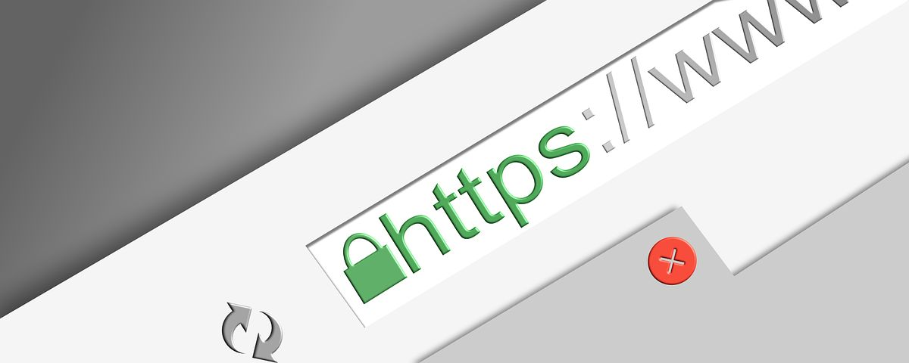

Everyday Internet Security
Internet Security Basics
So, you’re scrolling the internet, as you do most days, and you happen to glance up and notice the lock icon next to the link of the website you’re on. What does that represent you may ask? Well, that little lock is in essence what keeps your information safe and lets you know whatever website you’re on has established a secure connection between your browser and the server the website is hosted on.
Along with other things like SSL, and its successor TLS, this lock (shown above) is an important piece in keeping you safe when browsing the web.
What are TLS and SSL?
In order for this lock to be represented in your browser, the website you are on has to receive what is called an SSL (Secure Sockets Layer) or TSL (Transport Layer Security) Certificate. What is that? Well, it encrypts your data. everything from credit card or address information if you are online shopping, to banking information, and other personal information or passwords that you would definitely not want falling into the wrong hands.
It does this by encrypting your data. Encryption turns your personal information into a cipher or a code that is unreadable by hackers or anyone trying to get a hold of your information, so it is incredibly important
The difference between TLS and SSL is minimal but in short, TLS is just a newer, more secure version of SSL. Although we normally choose to use SSL as the more common term, in reality, it is almost always TLS protecting you
What else should I look for?
Another very common thing to look for when questioning the security of a website is the HTTPS:// vs HTTP:// tags at the beginning of a URL. To understand this, you should know that both these tags are a protocol used in transferring data or information over a network.
The big difference between the two tags is HTTPS:// is encrypted using TLS (SSL). Meaning it is a more secure version of HTTP:// which doesn’t have encryption at all.
Additional Measures
When you see all these measures being taken you can feel comfort in being safe, but in order to be entirely safe, you need to be a bit wary of the websites you visit. Now, I’m not saying you need to do an in-depth search of the websites you’re visiting to read up on quotes from your favorite sitcom, but just know that even if a website has all the proper identifiers of safety, its developer could still have malicious intent with what it does with your data. In short, just be careful, and if you think a website may have some ill intentions, it may be in your best interest to do some additional research.